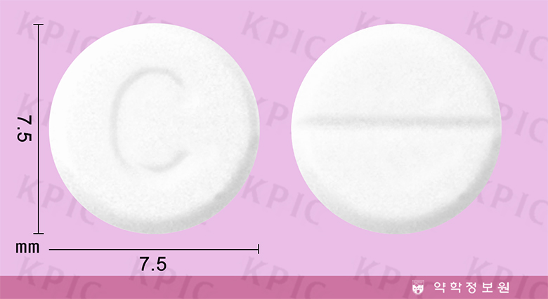

코데인
출처 : 약학정보원
효능 : 19세 이상 성인 | 1) 아세트아미노펜이나 이부프로펜과 같은 다른 진통제로 경감되지 않은 염증에 의한 급성 중등도 통증의 완화 2) 기관지염, 폐렴, 인두염, 후두염, 기관지천식, 기타 호흡기 질환에 동반되는 기침의 진정
용법/용량 : 코데인인산염수화물로서 1회 20 mg, 1일 3회 경구투여한다. 이 용량은 최소 6시간 간격으로 하루에 4회까지 투여할 수 있다. 1일 최대복용량은 240 mg을 초과할 수 없다. 증상에 따라 적절히 증감한다.
부작용 : 간에서 모르핀으로 전환되며 대사효소의 차이로 느리거나 얕은 호흡, 혼동, 불면, 동공축소, 변비 등 모르핀에 의한 독성이 나타날 수 있음.